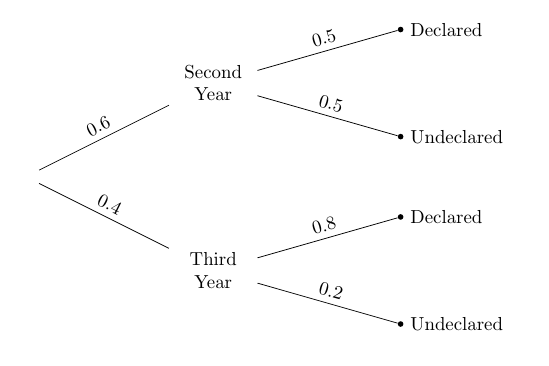

A “More Likely Than Not” Binary Classifier¶
Let’s try to use data to classify a point into one of two categories, choosing the category that we think is more likely than not. To do this, we not only need the data but also a clear description of how chances are involved.
We will start out in a simple artifical setting just to develop the main technique, and then move to a more intriguing example.
Suppose there is a university class with the following composition:
60% of the students are Second Years and the remaining 40% are Third Years
50% of the Second Years have declared their major
80% of the Third Years have declared their major
Now suppose I pick a student at random from the class. Can you classify the student as Second Year or Third Year, using our “more likely than not” criterion?
You can, because the student is picked at random and so you know that the chance that the student is a Second Year is 60%. That’s greater than the 40% chance of being a Third Year, so you would classify the student as Second Year.
The information about the majors is irrelevant, as we already know the proportions of Second and Third Years in the class.
We have a pretty simple classifier! But now suppose I give you some additional information about the student who was picked:
The student has declared a major.
Would this knowledge change your classification?
Updating the Prediction Based on New Information¶
Now that we know the student has declared a major, it becomes important to look at the relation between year and major declaration. It’s still true that more students are Second Years than Third Years. But it’s also true that among the Third Years, a much higher percent have declared their major than among the Second Years. Our classifier has to take both of these observations into account.
To visualize this, we will use a table students that consists of one row for each of 100 students whose years and majors have the same proportions as given in the data.
students.show(3)
| Year | Major |
|---|---|
| Second | Undeclared |
| Second | Undeclared |
| Second | Undeclared |
... (97 rows omitted)
To check that the proportions are correct, let’s use pivot to cross-classify each student according to the two variables.
students.pivot('Major', 'Year')
| Year | Declared | Undeclared |
|---|---|---|
| Second | 30 | 30 |
| Third | 32 | 8 |
The total count is 100 students, of whom 60 are Second Years and 40 are Third Years. Among the Second Years, 50% are in each of the Major categories. Among the 40 Third Years, 20% are Undeclared and 80% Declared. So this population of 100 students has the same proportions as the class in our problem, and we can assume that our student has been picked at random from among all 100 students.
We have to pick which row the student is most likely to be in. When we knew nothing more about the student, he or she could be in any of the four cells, and therefore were more likely to be in the top row (Second Year) because that contains more students.
But now we know that the student has declared a major, so the space of possible outcomes has decreased: now the student can only be in one of the two Declared cells.
There are 62 students in those cells, and 32 out of the 62 are Third Years. That’s more than half, even though not by much.
So, in the light of the new information about the student’s major, we have to update our prediction and now classify the student as a Third Year.
What is the chance that our classification is correct? We will be right for all the 32 Third Years who are Declared, and wrong for the 30 Second Years who are Declared. The chance that we are correct is therefore about 0.516.
In other words, the chance that we are correct is the proportion of Third Years among the students who have Declared.
32/(30+32)
0.5161290322580645
Tree Diagram¶
The proportion that we have just calculated was based on a class of 100 students. But there’s no reason the class couldn’t have had 200 students, for example, as long as all the proportions in the cells were correct. Then our calculation would just have been 64/(60 + 64) which is 0.516 as before.
So the calculation depends only on the proportions in the different categories, not on the counts. The proportions can be visualized in a tree diagram, shown directly below the pivot table for ease of comparison.
students.pivot('Major', 'Year')
| Year | Declared | Undeclared |
|---|---|---|
| Second | 30 | 30 |
| Third | 32 | 8 |

Like the pivot table, this diagram partitions the students into four distinct groups known as “branches”. Notice that the “Third Year, Declared” branch contains the proportion 0.4 x 0.8 = 0.32 of the students, corresponding to the 32 students in the “Third Year, Declared” cell of the pivot table. The “Second Year, Declared” branch contains 0.6 x 0.5 = 0.3 of the students, corresponding to the 30 in the “Second Year, Declared” cell of the pivot table.
We know that the student who was picked belongs to a “Declared” branch; that is, the student is either in the top branch or the third from top. Those two branches now form our reduced space of possibilities, and all chances have to be calculated relative to the total chance of this reduced space.
So, given that the student is Declared, the chance of them being a Third Year can be calculated directly from the tree. The answer is the proportion in the “Third Year, Declared” branch relative to the total proportion in the two “Declared” branches.
That is, the answer is the proportion of Third Years among students who are Declared, as before.
(0.4 * 0.8)/(0.6 * 0.5 + 0.4 * 0.8)
0.5161290322580645
Bayes’ Rule¶
The method that we have just used is due to the Reverend Thomas Bayes (1701-1761). His method solved what was called an “inverse probability” problem: given new data, how can you update chances you had found earlier? Though Bayes lived three centuries ago, his method is widely used now in machine learning.
We will state the rule in the context of our population of students. First, some terminology:
Prior probabilities. Before we knew the chosen student’s major declaration status, the chance that the student was a Second Year was 60% and the chance that the student was a Third Year was 40%. These are the prior probabilities of the two categories.
Likelihoods. These are the chances of the Major status, given the category of student; thus they can be read off the tree diagram. For example, the likelihood of Declared status given that the student is a Second Year is 0.5.
Posterior probabilities. These are the chances of the two Year categories, after we have taken into account information about the Major declaration status. We computed one of these:
The posterior probability that the student is a Third Year, given that the student has Declared, is denoted \(P(\text{Third Year} ~\big{\vert}~ \text{Declared})\) and is calculated as follows.
The other posterior probability is
(0.6 * 0.5)/(0.6 * 0.5 + 0.4 * 0.8)
0.4838709677419354
That’s about 0.484, which is less than half, consistent with our classification of Third Year.
Notice that both the posterior probabilities have the same denominator: the chance of the new information, which is that the student has Declared.
Because of this, Bayes’ method is sometimes summarized as a statement about proportionality:
Formulas are great for efficiently describing calculations. But in settings like our example about students, it is simpler not to think in terms of formulas. Just use the tree diagram.